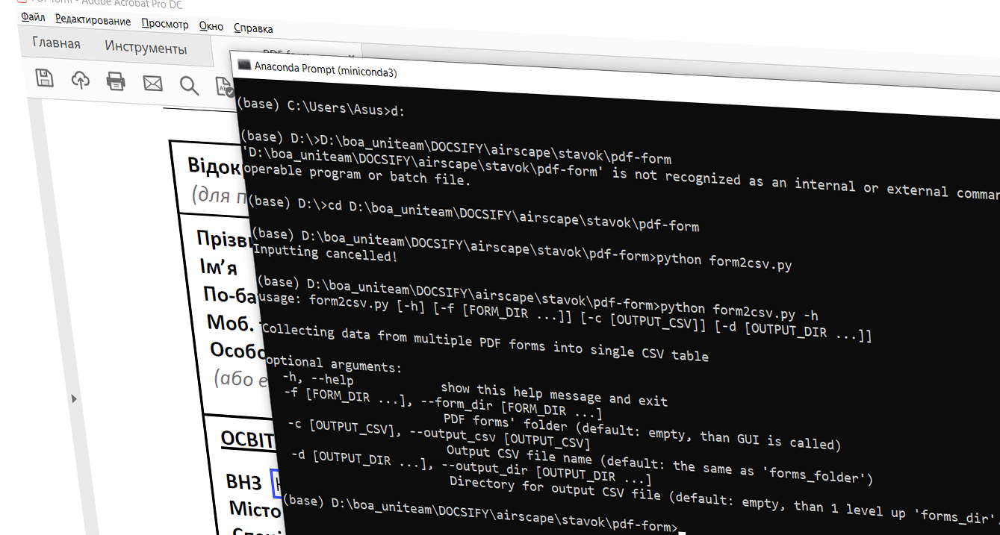

Якщо ви не хочете щоразу залазити всередину коду для налаштування вхідних параметрів, то цей матеріал саме для вас.

Взаємодія користувача з програмними продуктами чи то з власними чи то коли ви передаєте їх у спільне користування є важливою передумовою для їхнього ефективного повторного використання як для автора так інших користувачів. Для цієї взаємодії важлива наявність як інтерфейсу командного рядка (CLI) так і графічного інтерфейсу користувача (GUI).
У нещодавній статті "Automated processing of PDF forms" мною була описана реалізація утиліти для автоматизованої обробки PDF форм. Все працює начебто добре, але цьому застосунку явно бракувало простого користувацького інтерфейсу. Отже я вирішив надолужити це недопрацювання.
Для запуску утиліти (назвемо її parse_cmd_line.py) нам потрібен доволі простий інтерфейс із чотирьох вхідних параметрів:
| Запис параметра | Пояснення |
|---|---|
-h, --help | Підказка |
-f [FORM_DIR], --form_dir [FORM_DIR] | фолдер, де розміщені однотипні PDF форми |
-c [OUTPUT_CSV], --output_csv [OUTPUT_CSV] | назва файлу CSV-таблиці, де збиратимуться значення полів заповнених форм - output_csv |
-d [OUTPUT_DIR], --output_dir [OUTPUT_DIR] | фолдер, де буде розміщена результуюча CSV-таблиця |
Квадратні дужки означають необов'язовість параметра. Є дві тотжні за дією форми написання флажка параметру: скорочена - з одиничним дефісом попереду і повна - з подвоєним дефісом попереду. Великими літерами позначені значення параметрів, що передаються на вхід утиліті.
Сформуємо мета-код командного рядка для запуску утиліти:
> python parse_cmd_line.py [-h] [-f [FORM_DIR]] [-c [OUTPUT_CSV]] [-d [OUTPUT_DIR]]
Водночас ми хочемо визначати, яким інтерфейсом ми користуватимемося - CLI або GUI. Також бажано не роздмухувати кількість параметрів, щоб їх легко було запам'ятати, і мати під рукою кортоку підказку для управління запуском утиліти.
Логіка аналізу командного рядка представлена у таблиці нижче. У стовпчиках 2, 3 і 4 описано як формуються значення вхідних параметрів у випадках, коли:
| Параметр | Параметр і значення відсутні | Параметр є, значення відсутнє | Параметр є, значення є |
|---|---|---|---|
-f, --form_dir | використовуємо GUI | використовуємо GUI | беремо значення |
-c, --output_csv | беремо останній сегмент шляху form_dir від поділу / або \ | беремо останній сегмент шляху form_dir від поділу / або \ | беремо значення |
-d, --output_dir | беремо шлях на 1 рівень вище за повний шлях form_dir | використовуємо GUI | беремо значення |
До значення параметра output_csv додаємо розширення .csv у разі відсутності.
Для побудови інтерфейсу CLI і GUI використовуємо широко відомі модулі argparse і tkinter, відповідно. Останній модуль (tkinter) використовується всередині мого власного невеличкого модулю select_folder. Докладні описи модулів можна знайти за посиланнями наприкінці статті.
import argparse
import os
import re
from select_folder import select_folder
Спочатку будуємо аналізатор командного рядка (parser). Синтаксис кожного параметру задаємо з допомогою методу add_argument. Для цього використовуємо конструктор argparse.ArgumentParser, де задаємо короткий опис через аргумент description.
Два перших стрінгових аргументи методу add_argument з одним і двома дефісами попереду задають стислий і довгий ситнаксис параметру в рядку, відповідно. При тому довга назва параметру (без дефісів) використовуватиметься в якості ключа результуючого словника. За цим ключом можна буде доступатись до значення параметру.
Значення параметрів за замовчанням задаємо з допомогою аргументу default методу add_argument.
З допомогою аргументу nargs визначаємо кількість значень, що можна присвоїти параметрам form_dir і output_dir. При тому, nargs='*' означає кількість цих значень, починаючи від 0. Набір цих значень зберігається у вигляд списку. У випадку, коли nargs='?', параметру output_csv можна задати лише одне значення.
Аргумент required=False визначає необов'язковість появи параметру form_dir у командному рядку. Але аргумент required за замовчанням має значення False.
def set_parser():
parser = argparse.ArgumentParser(description='Collecting data from multiple'
' PDF forms into single CSV table')
parser.add_argument(
'-f',
'--form_dir',
default='.\\',
nargs='*',
required=False,
help='PDF forms\' folder (default: empty, than GUI is called)'
)
parser.add_argument(
'-c',
'--output_csv',
default='',
nargs='?',
help='Output CSV file name (default: the same as \'forms_folder\')'
)
parser.add_argument(
'-d',
'--output_dir',
default='',
nargs='*',
help='Directory for output CSV file (default: empty, than 1 level up'
' \'forms_dir\'..)'
)
return parser.parse_args()
Включення складнішої логіки (як це описано вище у розділі "Логіка аналізу командного рядка") потребує додатково коду, що представлений у функції fetch_cli_args. Код розілений на три блоки - окремо для кожного параметру form_dir, output_csv і output_dir. Для кожного параметру проводиться аналіз щодо того:
select_folder.Оброблені результати розміщаються у вихідному словнику:
{'form_dir': form_dir, 'output_csv': output_csv, 'output_dir': output_dir, 'cancelled': False}
Тут можна помітити додаткове поле cancelled, яке за звичай встановлене False. І лише під час вибору фолдера в графічному інтерфейсі ви вирішили відмовитись від введення, натиснувши Cancel, значення цього поля буде встановлено True. В подальшому це буде використано для припинення утиліти.
def fetch_cli_args(initialdir='./'):
parsed_cli = set_parser()
# --form_dir
# '-f' omitted or '-f' with empty str list -> GUI
if (type(parsed_cli.form_dir) is str) or \
len(parsed_cli.form_dir) == 0:
title = 'Select PDF form folder'
form_dir = select_folder(title=title, initialdir=initialdir)
if len(form_dir) == 0: # GUI cancelled -> stop execution
return {'cancelled': True}
else:
form_dir = os.path.abspath(parsed_cli.form_dir[0])
# --output_csv
if not parsed_cli.output_csv: # '-c' omitted ->
output_csv = os.path.basename(form_dir)
# if 'form_dir' ends with '\' or '/' than 'output_csv' is empty string
if not output_csv:
# cut tailing '\' or '/'
form_dir = re.sub('[/\\\]+$','',form_dir)
output_csv = os.path.basename(form_dir) + '.csv'
else:
output_csv = parsed_cli.output_csv
if output_csv.split('.')[-1].lower() != 'csv':
output_csv += '.csv'
# --output_dir
form_dir_ = '/'.join(re.split('[\\\\/]',form_dir)[:-1]) # 1 level up 'forms_dir\..'
if len(form_dir_) == 0: # 'form_dir' is root (most upper) folder
return {'cancelled': True}
if type(parsed_cli.output_dir) is str: # '-o' omitted -> 1 level up 'forms_dir\..'
output_dir = form_dir_
elif len(parsed_cli.output_dir) == 0: # '-o' with empty str list -> GUI
title = 'Select folder for output CSV'
output_dir = select_folder(title=title, initialdir=form_dir_)
if len(output_dir) == 0: # GUI cancelled -> stop execution
return {'cancelled': True}
else:
output_dir = os.path.abspath(parsed_cli.output_dir[0])
return {'form_dir': form_dir, 'output_csv': output_csv,
'output_dir': output_dir, 'cancelled': False}
Наприкінці модулю parse_cmd_line.py є фрагмент для відлагодження. Він потрібен для можливості самостійного запуску модулю з метою тестування і модифікації коду. Фрагмент представляє зразок типового використання методу fetch_cli_args.
if __name__ == '__main__':
import sys
args = fetch_cli_args()
if args['cancelled']:
print('Inputting cancelled!')
sys.exit()
print(f'form_dir = {args["form_dir"]}')
print(f'output_csv = {args["output_csv"]}')
print(f'output_dir = {args["output_dir"]}')
На останок наведемо код модулю select_folder для створення графічного інтерфейсу, що використовується для вибору фолдеру.
# Source: https://www.programcreek.com/python/?CodeExample=select+folder
# Example: 11
from tkinter import filedialog
from tkinter import Tk
def select_folder(title='Select folder', initialdir='.'):
root = Tk()
root.attributes("-topmost", True)
root.withdraw()
folder_path = filedialog.askdirectory(title=title,
initialdir=initialdir)
root.destroy()
return folder_path
if __name__ == '__main__':
sf = select_folder(initialdir='.')
if sf:
print(f'Selected folder:\n{sf}')
else:
print('Selection cancelled!')
Зрештою маємо таку структуру програмних модулів утиліти form2csv включно з власними допоміжними модулями:
form2csv.py з розширеними коментарями українською
parse_cmd_line.pyselect_folder.pyparse_cmd_line.md - опис модулю parse_cmd_line.py українською